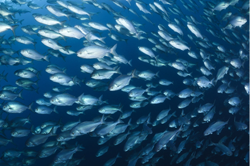

O algoritmo de boids é um conjunto de tres regras que, em conjunto, geram comportamentos muito semelhantes ao de diversos animais da natureza, por exemplo grupos de aves que andam conglomeradas e sincronizadas, ou cardumes de peixes. Boids é um programa de vida artificial, desenvolvido por Craig Reynolds em 1986, que simula o comportamento de bandos de pássaros e movimentos de grupo relacionados.
